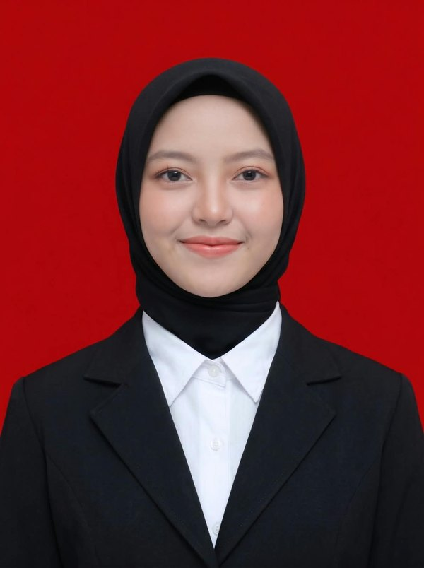

Mahasiswa Sistem Informasi · Calon Web Developer
Aulia Izzatul Jannah
Belajar sedikit demi sedikit, berkembang lebih baik dari kemarin.
The World For The Sake Of The Hereafter.
Kenali saya
Tentang Saya
Semuanya bermula dari rasa penasaran dan tanggung jawab sebagai mahasiswa Sistem Informasi angkatan 2026/2027. Dari situ saya mulai mengenal banyak hal yang sebelumnya benar-benar asing.
Proses itu menumbuhkan mimpi baru: menjadi web developer profesional dan melanjutkan S2 di luar negeri lewat beasiswa penuh. Saya percaya mimpi itu bisa dicapai dengan belajar dan berlatih sedikit demi sedikit, insyaallah.
Saya suka bereksperimen dengan kode, menjelajahi teknologi baru, dan mengubah ide menjadi sesuatu yang nyata dan bermanfaat bagi sekitar.
Di luar layar, saya aktif sebagai pembawa acara, pesilat, dan relawan.
Pendidikan
Keahlian
Teknik Komputer dan Jaringan
<>Sistem Informasi
- Analisis kebutuhan dan perancangan sistem
- Basis data dan SQL dasar
- Pemrograman web: HTML, CSS, JavaScript
- Desain antarmuka dan pengalaman pengguna
- Pemodelan proses bisnis dan diagram UML
- Pengelolaan data dan dokumentasi
Soft Skill
- Public speaking, MC, moderator, dan host
- Kepemimpinan dan kerja tim
- Manajemen organisasi dan keuangan
- Membuat konten dan podcast
- Disiplin dan ketahanan lewat pencak silat
Pencapaian
Akademik dan non-akademik, dari tingkat kabupaten sampai nasional.
Mari Terhubung
Terbuka untuk kolaborasi, diskusi, dan kesempatan belajar.